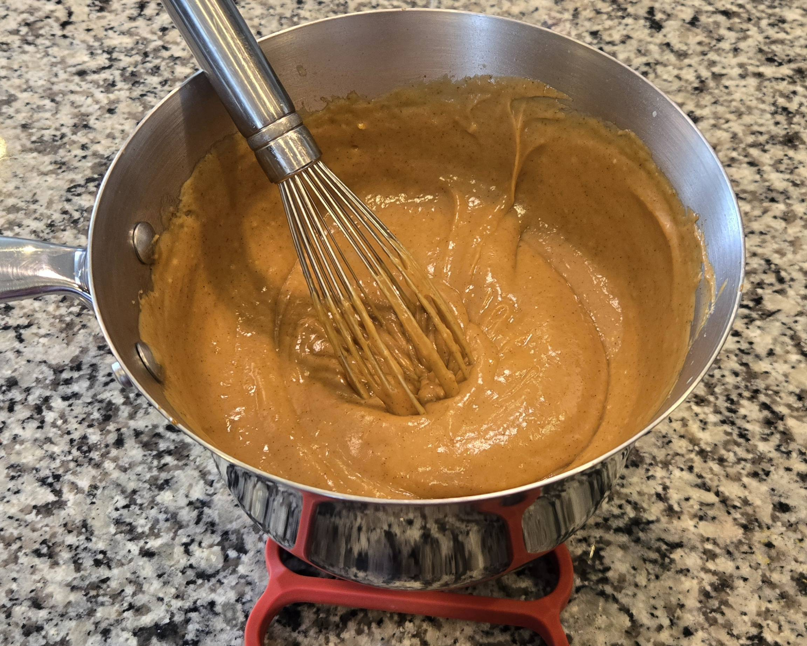

Filling Recipe
It is important that the crust has time to cool completely before you begin making the filling, as once you begin heating up the ingredients, you won't have much time to wait. The filling sets quickly once it starts to cool, so the crust has to be ready before then.
Ingredients
- 6 tablespoons cornstarch
- 1 teaspoon ground cinnamon
- 1 teaspoon salt
- 4 egg yolks
- ¼ cup salted butter
- ½ cup dark brown sugar
- 1 cup heavy cream
- 2 ½ cups whole milk
- ½ cup butterscotch chips
Instructions
- In medium bowl, whisk cornstarch, salt and egg yolks until smooth. Whisk in milk.
- In a saucepan, melt butter over medium high heat and add dark brown sugar. Bring to a boil and whisk constantly for 3 minutes.
- Combine the cream mixture and the sugar mixture. Slowly whisk in the egg mixture.
- Add salt and cinnamon and then bring to a boil, whisking constantly.
- Once thickened, remove from heat and then whisk in butterscotch chips.
- Pour the filling into the pie shell and then smooth the top.
- Place the pie on a cooling rack for an hour and then refrigerate to completely cool.
- Serve and enjoy!
